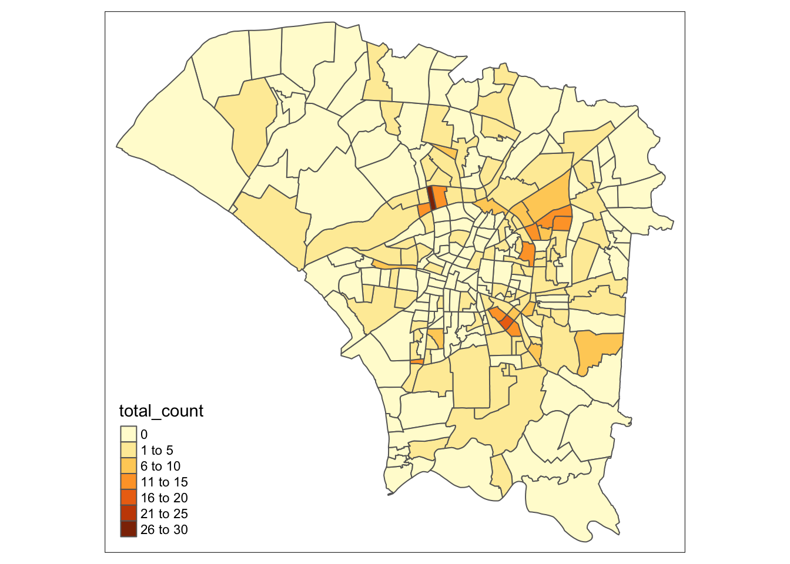

pacman::p_load(sf, spNetwork, tmap, classInt, viridis, tidyverse, list, arrow, lubridate, tidyverse, readr, sp, maptools, raster, spatstat, spdep, readr, ggplot2, plotly, hexbin, gganimate, gifski, png, transformr, dplyr)Take Home Exercise 2
Overview
Setting the Scene
Dengue Hemorrhagic Fever (in short dengue fever) is one of the most widespread mosquito-borne diseases in the most tropical and subtropical regions. It is an acute disease caused by dengue virus infection which is transmitted by female Aedes aegypti and Aedes albopictus mosquitoes. In 2015, Taiwan had recorded the most severe dengue fever outbreak with more than 43,000 dengue cases and 228 deaths. Since then, the annual reported dengue fever cases were maintained at the level of not more than 200 cases. However, in 2023, Taiwan recorded 26703 dengue fever cases. Figure below reveals that more than 25,000 cases were reported at Tainan City.
Figure 2 and 3 below reveal that more than 80% of the reported dengue fever cases occurred in the month August-November 2023 and epidemiology week 31-50.
Objectives
As a curious geospatial analytics green horn, you are interested to discover:
if the distribution of dengue fever outbreak at Tainan City, Taiwan are independent from space and space and time. If the outbreak is indeed spatial and spatio-temporal dependent, then, you would like to detect where are the clusters and outliers, and the emerging hot spot/cold spot areas.
The Task
The specific tasks of this take-home exercise are as follows:
Using appropriate function of sf and tidyverse, preparing the following geospatial data layer: a study area layer in sf polygon features. It must be at village level and confined to the D01, D02, D04, D06, D07, D08, D32 and D39 counties of Tainan City, Taiwan. a dengue fever layer within the study area in sf point features. The dengue fever cases should be confined to epidemiology week 31-50, 2023. a derived dengue fever layer in spacetime s3 class of sfdep. It should contain, among many other useful information, a data field showing number of dengue fever cases by village and by epidemiology week. Using the extracted data, perform global spatial autocorrelation analysis. Using the extracted data, perform local spatial autocorrelation analysis. Using the extracted data, perform emerging hotspot analysis. Describe the spatial patterns revealed by the analysis above.
The Data
For the purpose of this take-home exercise, two data sets are provided, they are:
TAIWAN_VILLAGE_2020, a geospatial data of village boundary of Taiwan. It is in ESRI shapefile format. The data is in Taiwan Geographic Coordinate System. (Source: Historical map data of the village boundary: TWD97 longitude and latitude)
Dengue_Daily.csv, an aspatial data of reported dengue cases in Taiwan since 1998. (Source: Dengue Daily Confirmed Cases Since 1998. Below are selected fields that are useful for this study:
發病日: Onset date 最小統計區中心點X: x-coordinate 最小統計區中心點Y: y-coordinate Both data sets have been uploaded on eLearn. Students are required to download them from eLearn.
Getting Started
Data Acquisition
| Dataset Name | Source |
| TAIWAN_VILLAGE_2020 | Historical map data of the village boundary: TWD97 longitude and latitude |
| Dengue_Daily.csv | Dengue Daily Confirmed Cases Since 1998 |
Installing and Loading Packages
Lets install the relevant R libraries needed using pacman.
Setting Important Configurations
folderToSave <- "/Users/maarunipandithurai/Documents/maars202/geospatial/IS415-GAA/data/rds"currentdirec = list.files(path="../../data/takehomeassigment2/geospatial", pattern=NULL, all.files=FALSE,
full.names=FALSE)
currentdirecReading the grab aspatial data:
dengue_df <- read_csv("../../data/takehomeassigment2/aspatial/Dengue_Daily.csv")
dengue_dfGetting Columns of dengue_df:
names(dengue_df)Lets print a summary of dengue_df to find the data distribution and other info:
summary(dengue_df[])We need to retrieve the coastal outline of Taiwan village so that we are able to fetch the dengue infections specifically within these boundaries.
taiwan_sf <- st_read(dsn = "../../data/takehomeassigment2/geospatial", layer="TAINAN_VILLAGE") %>%
st_transform(crs = 3826)
taiwan_sfplot(taiwan_sf)According to https://epsg.io/3826, the EPSG code for taiwan to be used as the coordinate system is 3826. Thus, the data has been projected to Taiwan’s coordinate system using 3826.
# find location of missing values
print("Position of missing values ")
which(is.na(dengue_df))
# count total missing values
print("Count of total missing values ")
sum(is.na(dengue_df))
colSums(is.na(dengue_df))
Tip
Interesting observation I had here was how all the columns had no missing values and yet the map was not being plotted. Then, I realised it was due to the null values being presented as “None” string instead of the numerical value such as the example below.
dengue_df[6,]$最小統計區中心點XLets filter out all the None values to get valid x and y coordinates. 最小統計區中心點X, 最小統計區中心點Y
dengue_df_filtered <- filter(dengue_df, 最小統計區中心點X != "None" & 最小統計區中心點Y != "None")
dengue_df_filteredtodo: After filtering valid points, lets convert the latitude and longitude from TWD97 to wsg84 as it conforms to google maps and most global standards for easier analysis.
dengue_df_filtered <- st_as_sf(dengue_df_filtered,
coords = c("最小統計區中心點X","最小統計區中心點Y"),
crs=3826) %>%
st_transform(crs = 3826)
glimpse(dengue_df_filtered)dengue_df_filterednrow(dengue_df_filtered[1:100,])tmap_mode('view')
tm_shape(dengue_df_filtered[1:100,])+
tm_dots()最小統計區中心點X, 最小統計區中心點Y
Let us save this combined dataframe to RDS so that we will not need to repeat the above steps. Replace filepath with the directory you would like to save the rds at.
filepath <- str_interp("${folderToSave}/dengue_df")
write_rds(dengue_df_filtered, filepath) Continue from here for subsequent steps:
filepath <- str_interp("${folderToSave}/dengue_df")
dengue_df <- read_rds(filepath, refhook = NULL)
dengue_df Analysis
pacman::p_load(sf, spNetwork, tmap, classInt, viridis, tidyverse, list, arrow, lubridate, tidyverse, readr, sp, maptools, raster, spatstat, spdep, readr, ggplot2, plotly, hexbin, gganimate, gifski, png, transformr, dplyr)
folderToSave <- "/Users/maarunipandithurai/Documents/maars202/geospatial/IS415-GAA/data/rds"taiwan_sf <- st_read(dsn = "../../data/takehomeassigment2/geospatial", layer="TAINAN_VILLAGE") %>%
st_transform(crs = 3826)Reading layer `TAINAN_VILLAGE' from data source
`/Users/maarunipandithurai/Documents/maars202/geospatial/IS415-GAA/data/takehomeassigment2/geospatial'
using driver `ESRI Shapefile'
Simple feature collection with 649 features and 10 fields
Geometry type: POLYGON
Dimension: XY
Bounding box: xmin: 120.0269 ymin: 22.88751 xmax: 120.6563 ymax: 23.41374
Geodetic CRS: TWD97taiwan_sfSimple feature collection with 649 features and 10 fields
Geometry type: POLYGON
Dimension: XY
Bounding box: xmin: 150292.5 ymin: 2531973 xmax: 214819.9 ymax: 2590210
Projected CRS: TWD97 / TM2 zone 121
First 10 features:
VILLCODE COUNTYNAME TOWNNAME VILLNAME VILLENG COUNTYID COUNTYCODE
1 67000280002 臺南市 歸仁區 六甲里 Liujia Vil. D 67000
2 67000350032 臺南市 安南區 青草里 Qingcao Vil. D 67000
3 67000150009 臺南市 七股區 溪南里 Xinan Vil. D 67000
4 67000150010 臺南市 七股區 七股里 Qigu Vil. D 67000
5 67000150008 臺南市 七股區 龍山里 Longshan Vil. D 67000
6 67000150017 臺南市 七股區 中寮里 Zhongliao Vil. D 67000
7 67000150004 臺南市 七股區 篤加里 Dujia Vil. D 67000
8 67000150007 臺南市 七股區 塩埕里 Yancheng Vil. D 67000
9 67000150022 臺南市 七股區 三股里 Sangu Vil. D 67000
10 67000150023 臺南市 七股區 十份里 Shifen Vil. D 67000
TOWNID TOWNCODE NOTE geometry
1 D33 67000280 <NA> POLYGON ((175398.2 2539893,...
2 D06 67000350 <NA> POLYGON ((159595.3 2553843,...
3 D22 67000150 <NA> POLYGON ((159982.8 2559559,...
4 D22 67000150 <NA> POLYGON ((161027.5 2559729,...
5 D22 67000150 <NA> POLYGON ((156237.9 2559530,...
6 D22 67000150 <NA> POLYGON ((160519 2563284, 1...
7 D22 67000150 <NA> POLYGON ((163836.7 2561558,...
8 D22 67000150 <NA> POLYGON ((154124 2563492, 1...
9 D22 67000150 <NA> POLYGON ((151891.2 2557389,...
10 D22 67000150 <NA> POLYGON ((159855.9 2554924,...filepath <- str_interp("${folderToSave}/dengue_df")
dengue_df <- read_rds(filepath, refhook = NULL)
dengue_df # A tibble: 106,081 × 26
發病日 個案研判日 通報日 性別 年齡層 居住縣市 居住鄉鎮 居住村里
<date> <chr> <date> <chr> <chr> <chr> <chr> <chr>
1 1998-01-02 None 1998-01-07 男 40-44 屏東縣 屏東市 None
2 1998-01-03 None 1998-01-14 男 30-34 屏東縣 東港鎮 None
3 1998-01-13 None 1998-02-18 男 55-59 宜蘭縣 宜蘭市 None
4 1998-01-15 None 1998-01-23 男 35-39 高雄市 苓雅區 None
5 1998-01-20 None 1998-02-04 男 55-59 宜蘭縣 五結鄉 None
6 1998-01-23 None 1998-02-02 男 40-44 新北市 新店區 None
7 1998-01-26 None 1998-02-19 女 65-69 台北市 北投區 None
8 1998-02-11 None 1998-02-13 女 25-29 台南市 南區 None
9 1998-02-16 None 1998-02-24 男 20-24 高雄市 楠梓區 None
10 1998-02-17 None 1998-02-23 女 30-34 高雄市 鳳山區 None
# ℹ 106,071 more rows
# ℹ 18 more variables: 最小統計區 <chr>, 最小統計區中心點X <chr>,
# 最小統計區中心點Y <chr>, 一級統計區 <chr>, 二級統計區 <chr>,
# 感染縣市 <chr>, 感染鄉鎮 <chr>, 感染村里 <chr>, 是否境外移入 <chr>,
# 感染國家 <chr>, 確定病例數 <dbl>, 居住村里代碼 <chr>, 感染村里代碼 <chr>,
# 血清型 <chr>, 內政部居住縣市代碼 <chr>, 內政部居住鄉鎮代碼 <chr>,
# 內政部感染縣市代碼 <chr>, 內政部感染鄉鎮代碼 <chr>Columns in dengue_df:
names(dengue_df) [1] "發病日" "個案研判日" "通報日"
[4] "性別" "年齡層" "居住縣市"
[7] "居住鄉鎮" "居住村里" "最小統計區"
[10] "最小統計區中心點X" "最小統計區中心點Y" "一級統計區"
[13] "二級統計區" "感染縣市" "感染鄉鎮"
[16] "感染村里" "是否境外移入" "感染國家"
[19] "確定病例數" "居住村里代碼" "感染村里代碼"
[22] "血清型" "內政部居住縣市代碼" "內政部居住鄉鎮代碼"
[25] "內政部感染縣市代碼" "內政部感染鄉鎮代碼"Data distribution for columns
g <- ggplot(dengue_df_2, aes(年齡層))
p <- g + geom_bar() + ggtitle("Count of Entries by Age") + xlab("Age") + ylab("Count")
ggplotly(p) g <- ggplot(dengue_df, aes(感染縣市))
p <- g + geom_bar() + ggtitle("Count of Entries by 感染縣市") + xlab("感染縣市") + ylab("Count")
ggplotly(p)
ggplotly(p)
dengue_df_2 <- dengue_df[order(dengue_df$年齡層, decreasing = TRUE),]
dengue_df_2# A tibble: 106,081 × 26
發病日 個案研判日 通報日 性別 年齡層 居住縣市 居住鄉鎮 居住村里
<date> <chr> <date> <chr> <chr> <chr> <chr> <chr>
1 1998-09-06 None 1998-09-14 女 70+ 新北市 永和區 None
2 1998-09-12 None 1998-09-19 女 70+ 彰化縣 彰化市 None
3 1998-10-03 None 1998-10-09 男 70+ 台北市 北投區 None
4 1998-10-09 None 1998-10-22 男 70+ 高雄市 左營區 None
5 1998-11-08 None 1998-11-20 男 70+ 台南市 中西區 None
6 1998-11-21 None 1998-11-30 男 70+ 台南市 中西區 None
7 1998-11-29 None 1998-12-02 女 70+ 台南市 中西區 None
8 1998-11-30 None 1998-11-30 男 70+ 台南市 北區 None
9 1998-12-07 None 1998-12-11 男 70+ 台南市 中西區 None
10 1998-12-19 None 1998-12-22 男 70+ 台南市 中西區 None
# ℹ 106,071 more rows
# ℹ 18 more variables: 最小統計區 <chr>, 最小統計區中心點X <chr>,
# 最小統計區中心點Y <chr>, 一級統計區 <chr>, 二級統計區 <chr>,
# 感染縣市 <chr>, 感染鄉鎮 <chr>, 感染村里 <chr>, 是否境外移入 <chr>,
# 感染國家 <chr>, 確定病例數 <dbl>, 居住村里代碼 <chr>, 感染村里代碼 <chr>,
# 血清型 <chr>, 內政部居住縣市代碼 <chr>, 內政部居住鄉鎮代碼 <chr>,
# 內政部感染縣市代碼 <chr>, 內政部感染鄉鎮代碼 <chr>#plots will be done later due to time constraints
#plot(dengue_df)only need county codes:
taiwan_sf_filtered <- filter(taiwan_sf, TOWNID %in% c('D01', 'D02', 'D04', 'D06', 'D07', 'D08', 'D32', 'D39'))
taiwan_sf_filteredSimple feature collection with 258 features and 10 fields
Geometry type: POLYGON
Dimension: XY
Bounding box: xmin: 153939.6 ymin: 2532739 xmax: 177479.4 ymax: 2554660
Projected CRS: TWD97 / TM2 zone 121
First 10 features:
VILLCODE COUNTYNAME TOWNNAME VILLNAME VILLENG COUNTYID COUNTYCODE
1 67000350032 臺南市 安南區 青草里 Qingcao Vil. D 67000
2 67000270011 臺南市 仁德區 保安里 Bao'an Vil. D 67000
3 67000370005 臺南市 中西區 赤嵌里 Chihkan Vil. D 67000
4 67000330004 臺南市 南區 大成里 Dacheng Vil. D 67000
5 67000350028 臺南市 安南區 城北里 Chengbei Vil. D 67000
6 67000350030 臺南市 安南區 城南里 Chengnan Vil. D 67000
7 67000370009 臺南市 中西區 法華里 Fahua Vil. D 67000
8 67000350017 臺南市 安南區 海南里 Hainan Vil. D 67000
9 67000350049 臺南市 安南區 國安里 Guo'an Vil. D 67000
10 67000350018 臺南市 安南區 溪心里 Xixin Vil. D 67000
TOWNID TOWNCODE NOTE geometry
1 D06 67000350 <NA> POLYGON ((159595.3 2553843,...
2 D32 67000270 <NA> POLYGON ((171071 2537340, 1...
3 D08 67000370 <NA> POLYGON ((168116.2 2544469,...
4 D02 67000330 <NA> POLYGON ((167828.3 2542456,...
5 D06 67000350 <NA> POLYGON ((160772.3 2551760,...
6 D06 67000350 <NA> POLYGON ((160304 2552197, 1...
7 D08 67000370 <NA> POLYGON ((168942.9 2542787,...
8 D06 67000350 <NA> POLYGON ((165436 2546977, 1...
9 D06 67000350 <NA> POLYGON ((166628.4 2547577,...
10 D06 67000350 <NA> POLYGON ((166326.6 2551256,...taiwan_s <- as_Spatial(taiwan_sf_filtered)
taiwan_sp <- as(taiwan_s, "SpatialPolygons")
taiwan_owin <- as(taiwan_sp, "owin")
plot(taiwan_owin)
#dengue_df
#dengue_df_filtered
dengue_df_filtered <- st_as_sf(dengue_df,
coords = c("最小統計區中心點X","最小統計區中心點Y"),
crs=3826) %>%
st_transform(crs = 3826)
glimpse(dengue_df_filtered)Rows: 106,081
Columns: 25
$ 發病日 <date> 1998-01-02, 1998-01-03, 1998-01-13, 1998-01-15, 19…
$ 個案研判日 <chr> "None", "None", "None", "None", "None", "None", "No…
$ 通報日 <date> 1998-01-07, 1998-01-14, 1998-02-18, 1998-01-23, 19…
$ 性別 <chr> "男", "男", "男", "男", "男", "男", "女", "女", "男…
$ 年齡層 <chr> "40-44", "30-34", "55-59", "35-39", "55-59", "40-44…
$ 居住縣市 <chr> "屏東縣", "屏東縣", "宜蘭縣", "高雄市", "宜蘭縣", "…
$ 居住鄉鎮 <chr> "屏東市", "東港鎮", "宜蘭市", "苓雅區", "五結鄉", "…
$ 居住村里 <chr> "None", "None", "None", "None", "None", "None", "No…
$ 最小統計區 <chr> "A1320-0136-00", "A1303-0150-00", "A0201-0449-00", …
$ 一級統計區 <chr> "A1320-04-008", "A1303-09-007", "A0201-23-006", "A6…
$ 二級統計區 <chr> "A1320-04", "A1303-09", "A0201-23", "A6408-10", "A0…
$ 感染縣市 <chr> "None", "None", "None", "None", "None", "None", "No…
$ 感染鄉鎮 <chr> "None", "None", "None", "None", "None", "None", "No…
$ 感染村里 <chr> "None", "None", "None", "None", "None", "None", "No…
$ 是否境外移入 <chr> "否", "是", "是", "否", "否", "否", "否", "是", "是…
$ 感染國家 <chr> "None", "None", "None", "None", "None", "None", "No…
$ 確定病例數 <dbl> 1, 1, 1, 1, 1, 1, 1, 1, 1, 1, 1, 1, 1, 1, 1, 1, 1, …
$ 居住村里代碼 <chr> "None", "None", "None", "None", "None", "None", "No…
$ 感染村里代碼 <chr> "None", "None", "None", "None", "None", "None", "No…
$ 血清型 <chr> "None", "第二型", "None", "None", "None", "None", "…
$ 內政部居住縣市代碼 <chr> "10013", "10013", "10002", "64", "10002", "65", "63…
$ 內政部居住鄉鎮代碼 <chr> "1001301", "1001303", "1000201", "6400800", "100020…
$ 內政部感染縣市代碼 <chr> "None", "None", "None", "None", "None", "None", "No…
$ 內政部感染鄉鎮代碼 <chr> "None", "None", "None", "None", "None", "None", "No…
$ geometry <POINT [m]> POINT (120.5059 22.46421), POINT (120.4537 22…dengue_df_spatial_object <- as_Spatial(dengue_df_filtered)dengue_sp <- as(dengue_df_spatial_object, "SpatialPoints")
dengue_spclass : SpatialPoints
features : 106081
extent : 118.3081, 121.9826, 21.92574, 26.15617 (xmin, xmax, ymin, ymax)
crs : +proj=tmerc +lat_0=0 +lon_0=121 +k=0.9999 +x_0=250000 +y_0=0 +ellps=GRS80 +towgs84=0,0,0,0,0,0,0 +units=m +no_defs dengue_ppp <- as(dengue_sp, "ppp")
dengue_pppPlanar point pattern: 106081 points
window: rectangle = [118.30809, 121.98257] x [21.92574, 26.156166] unitsplot(dengue_ppp)
summary(dengue_ppp)Planar point pattern: 106081 points
Average intensity 6824.295 points per square unit
*Pattern contains duplicated points*
Coordinates are given to 6 decimal places
Window: rectangle = [118.30809, 121.98257] x [21.92574, 26.156166] units
(3.674 x 4.23 units)
Window area = 15.5446 square unitsIf we want to know how many locations have more than one point event, we can use the code chunk below.
duplicate_counts <- sum(multiplicity(dengue_ppp) > 1)
duplicate_counts[1] 97310#plotting to be done on AWS EC2 due to low computing power
#tmap_mode('view')
#tm_shape(dengue_df_filtered) +
# tm_dots(alpha=0.4,
# size=0.05)dengueTAIWAN_ppp = dengue_ppp[taiwan_owin]#plotting to be done on AWS EC2 due to low computing power
#plot(dengueTAIWAN_ppp)
Note
Planning:
- use statistical means to get distribution and see which one best - identify unique patterns and write reflection on them
add the cold and hot spots as separate layers for users to interact with
facet plots
make ranges for plots similar when comparing plots side by side